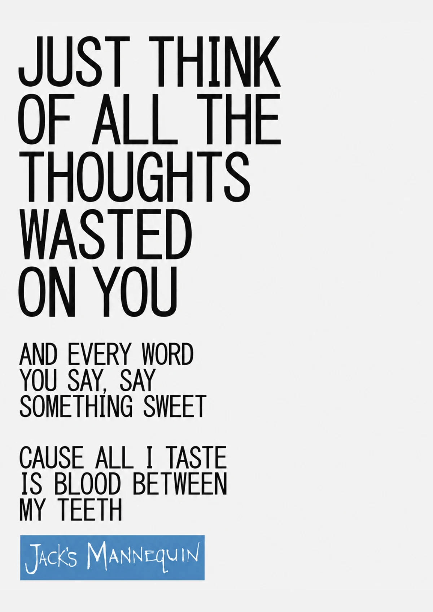
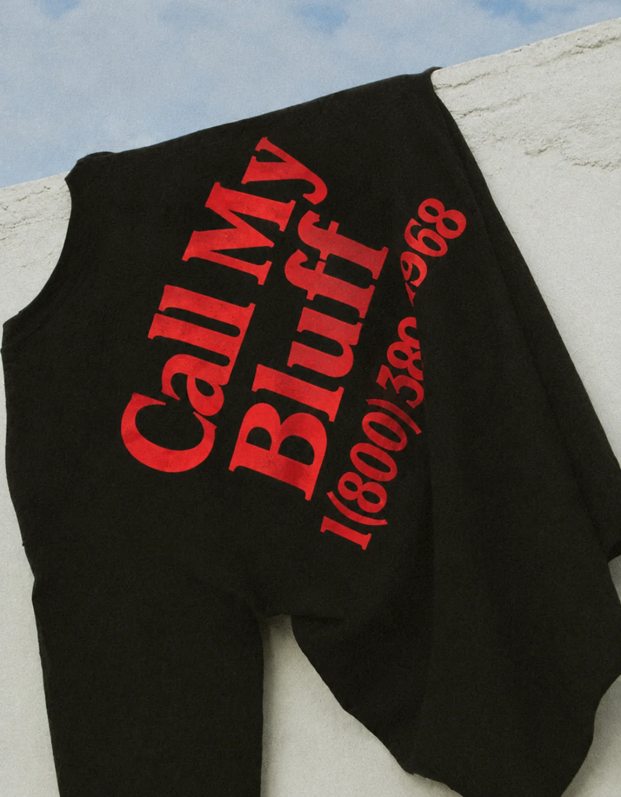
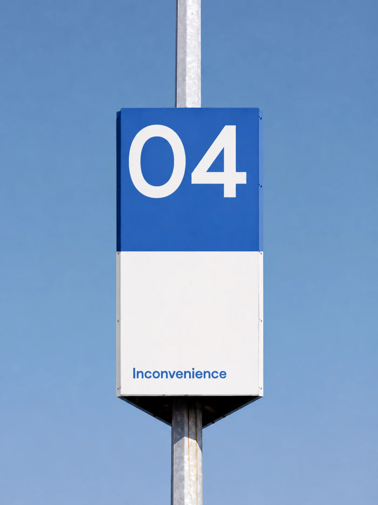

Room for a write-up — what the project was, what you made, what you'd point at. Send me the copy and it slots in per project.
Hi, I’d repeat my name again, but I think you already know it by now. Anyways, I’m currently working on my Bachelors of Management Info Systems.
On the side I love to do Typography and Web (UI/UX) Design! But… I do it a bit different. I’ll gather inspo, have ideas, draw wireframes, design everything with my own mind, and have AI solidify it together.
Oh, and don’t worry, I understand the code, but now I have more time to focus on my craft.
Tools
Reach out to me if you want to talk.
LinkedIn
Email: dantesmith@weber.edu